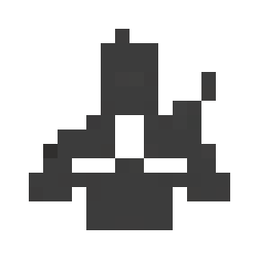

Ninjutsu
Manipulación del chakra para realizar técnicas.
El ninjutsu comprende técnicas que utilizan el chakra para producir diferentes efectos, como ataques elementales, transformaciones, técnicas de apoyo, curación y otras habilidades especiales.
Las cinco naturalezas básicas y el Ninjutsu
Katon
Elemento FuegoPermite generar y controlar técnicas basadas en el fuego.
風Fūton
Elemento VientoUtiliza el viento para cortar, impulsar y potenciar ataques.
雷Raiton
Elemento RayoConcentra chakra eléctrico en ataques rápidos y penetrantes.
土Doton
Elemento TierraPermite manipular la tierra para crear defensas y ataques.
水Suiton
Elemento AguaPermite crear y controlar agua en diferentes formas.

Ninjutsu
No es un elementoRasengan, clones de sombra, Dios del Trueno Volador y jutsu de sustitución.
Ninjutsu médico
Iryō Ninjutsu
Es la rama del ninjutsu dedicada a la medicina. Utiliza un control preciso del chakra para tratar heridas, curar lesiones y apoyar a otros ninjas. Su uso requiere conocimientos médicos y gran precisión.
Curación y apoyoOtras transformaciones elementales
Además de las cinco naturalezas básicas, existen transformaciones avanzadas que combinan naturalezas o presentan propiedades especiales.
Nota: algunas transformaciones avanzadas son kekkei genkai o kekkei tōta; no todos los ninjas pueden aprenderlas.